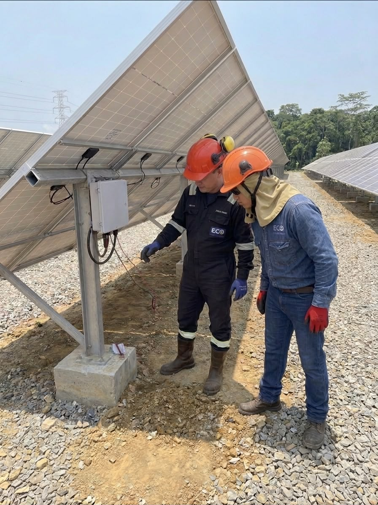
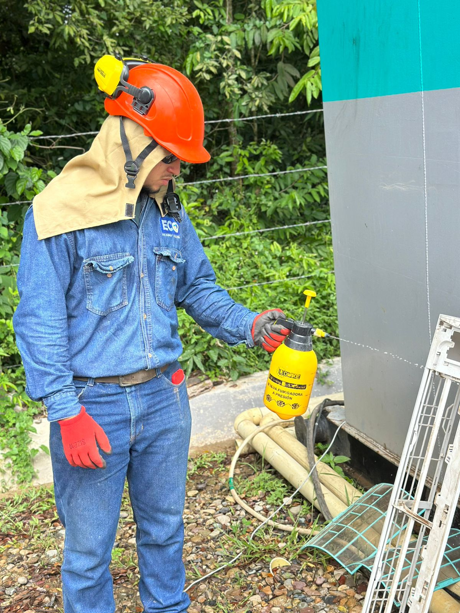
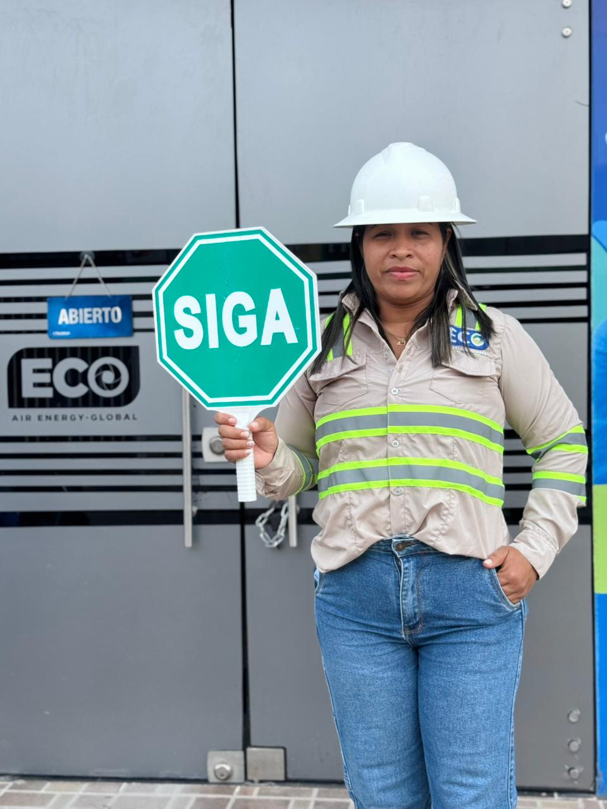
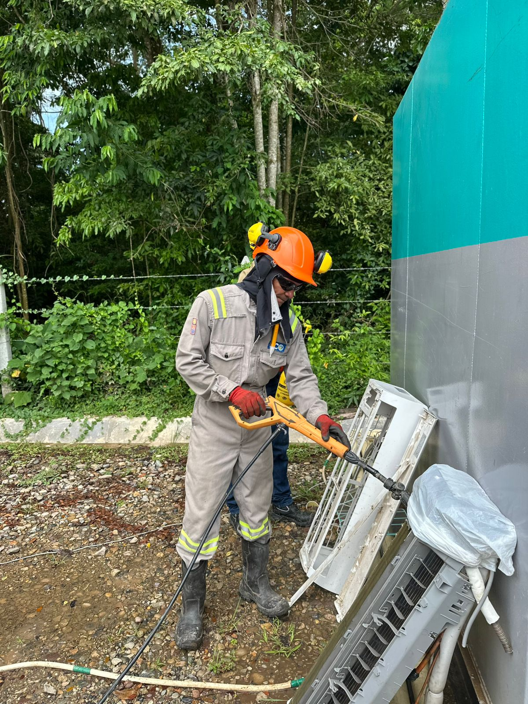
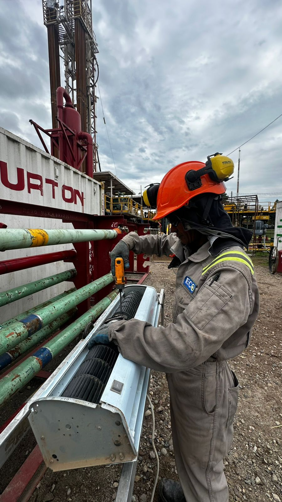
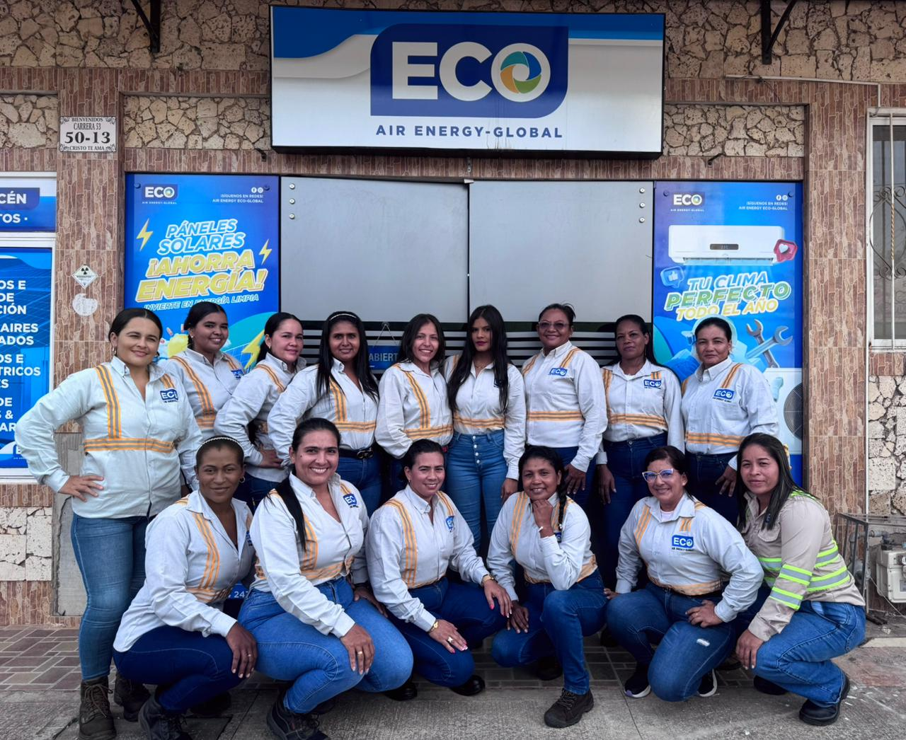
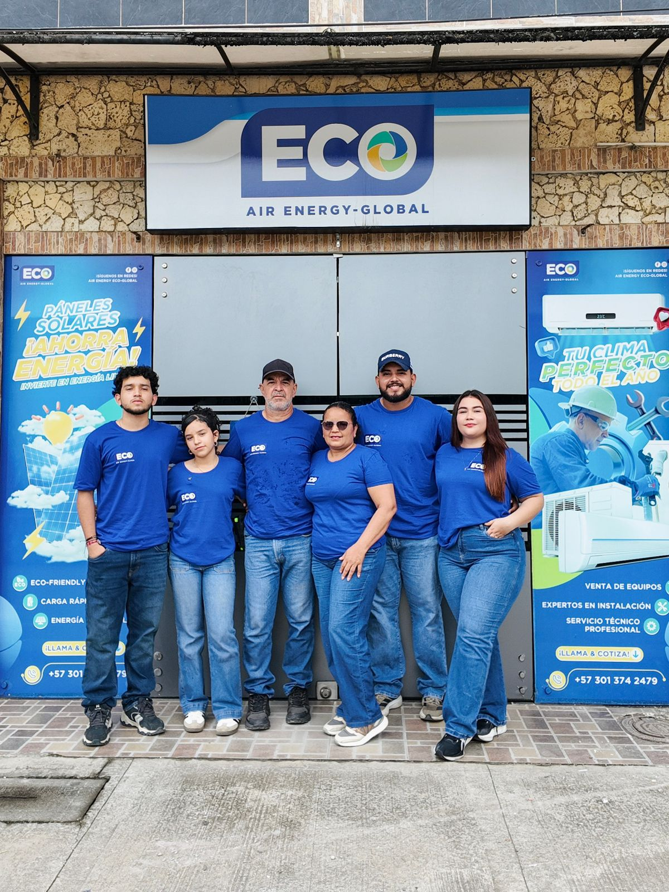
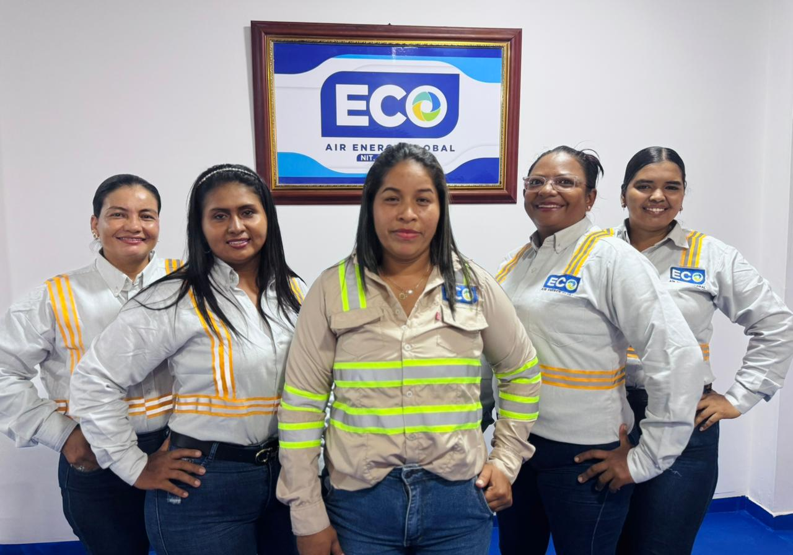

Experiencia
Respuestas claras para operaciones reales.
Hemos acompañado proyectos donde el clima, la distancia, el tiempo y la seguridad hacen que cada detalle cuente.
en operaciones
integradas
experiencia activa
Proyectos destacados
Trabajo que deja capacidad instalada.

Transición energética
Soluciones solares para infraestructura operativa
Diseño, suministro e instalación
Continuidad operativa
Mantenimiento de climatización industrial
Diagnóstico, intervención y seguimiento
Seguridad vial
Señalización para corredores de trabajo
Planeación e implementación en campo
Mantenimiento preventivo
Inspección técnica de equipos
Diagnóstico y verificación en sitio
Cuidado de equipos
Limpieza y conservación operativa
Tratamientos para un mejor desempeño
Intervención técnica
Ajuste de componentes en campo
Precisión para recuperar el rendimiento
Equipo humano
Personas que hacen posible cada servicio
Compromiso, cercanía y experiencia
Trabajo coordinado
Talento preparado para operar
Perfiles técnicos unidos en campo
Cercanía operativa
Un equipo que responde en conjunto
Coordinación desde la planeaciónSectores
Entendemos distintos ritmos de operación.
Capacidad técnica y presencia operativa para responder en entornos exigentes.
Sector Oil & Gas / Energético e Industrial
Soporte integral en frentes de trabajo, servicios logísticos en pozo y mantenimiento preventivo/correctivo HVAC para taladros e instalaciones de alta exigencia.
Infraestructura y Soluciones Técnicas
Diseño de redes de climatización, montajes civiles/industriales y contratos de facilidades operativas.
Movilidad, Distribución y Logística Crítica
Transporte especializado de personal y soporte terrestre.
Desarrollo Institucional y Gubernamental
Ejecución de proyectos del sector público bajo pliegos de transparencia y responsabilidad social.
Empresas
Experiencia operativa y alianzas clave.
Organizaciones que han confiado en nuestra capacidad técnica y presencia en campo.

Alcaldía de Yondó, Antioquia

General Rigs Services S.A.S.

Kerui Petroleum Equipment

Petromóvil de Colombia S.A.S.